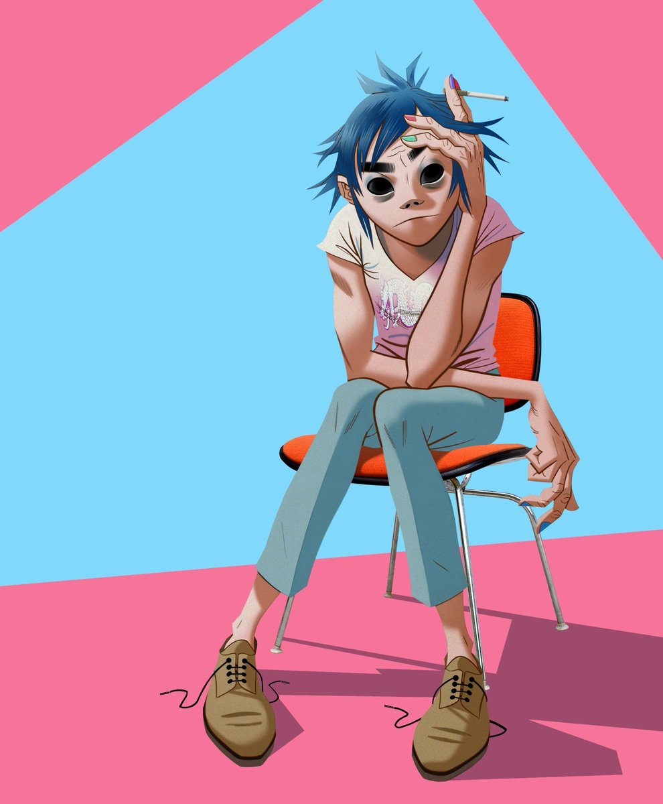

2D
Stuart Harold "2-D" Pot proporciona la voz principal y toca el teclado para la banda. La voz de canto de 2-D es proporcionada por Damon Albarn, líder de Blur, en las grabaciones y actuaciones de Gorillaz; su voz hablada fue proporcionada por el actor Nelson De Freitas en varios proyectos de vídeo directo a través de Gorillaz, como Fase Uno: Celebrity Take Down y Fase Dos: Slowboat to Hades. En 2017, Kevin Bishop fue elegido como la nueva voz hablada de 2-D. Fue creado por Albarn y Jamie Hewlett en 1998.
